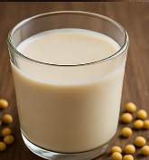

Soy Milk (豆浆)
Home

Ingredients
1 cup dried soybeans
4 cups water
Sugar to taste
Instructions
Soak beans overnight. Blend and strain.
Simmer 20 min. Add sugar if desired.
Other Recipes You Might Like
Garlic Stir-Fried Greens
Steamed Egg Custard
Honey Lemon Tea